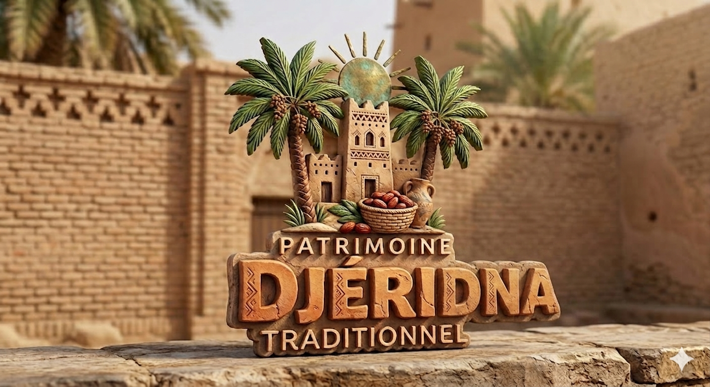
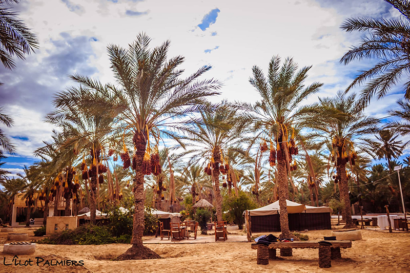
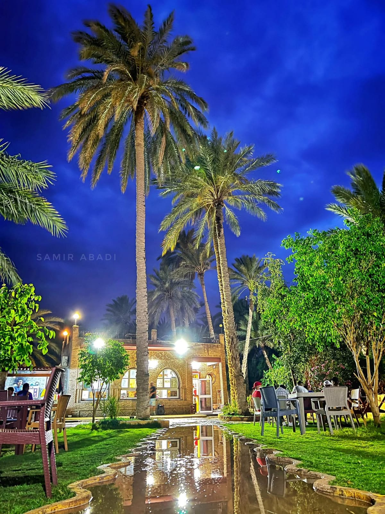
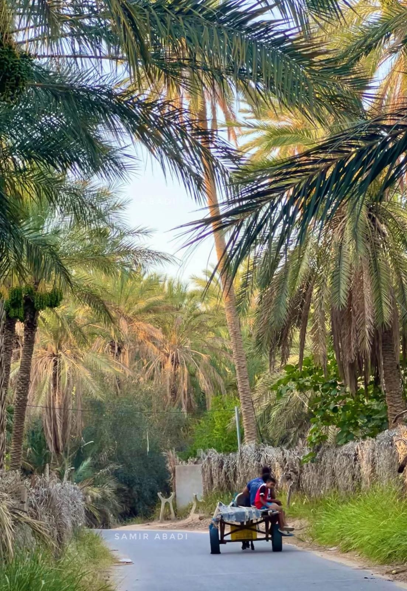
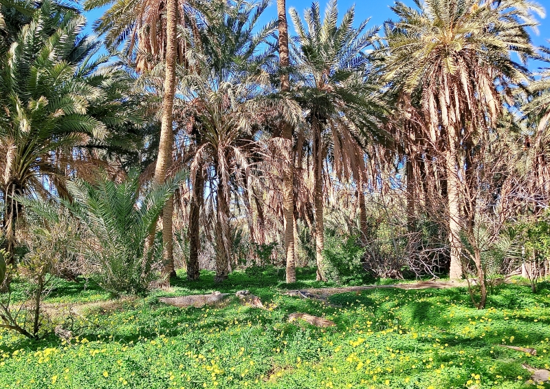
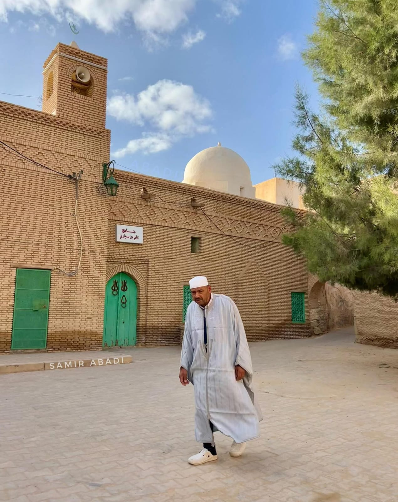
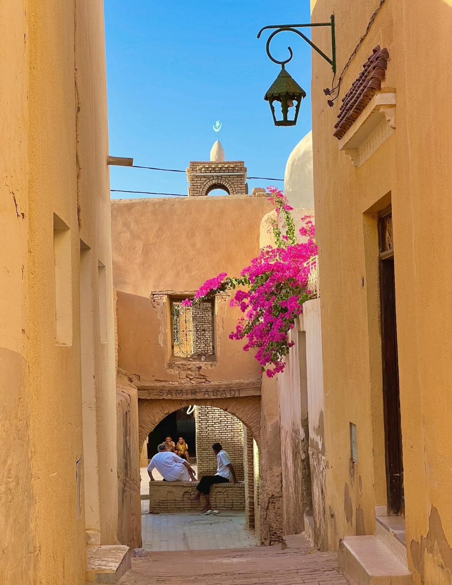
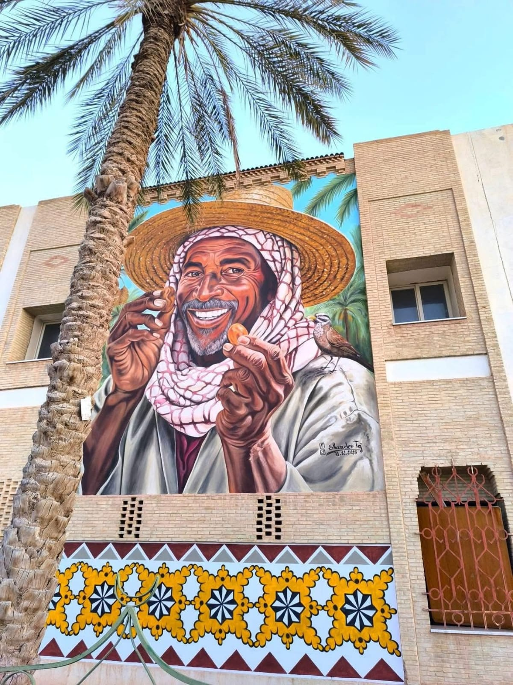
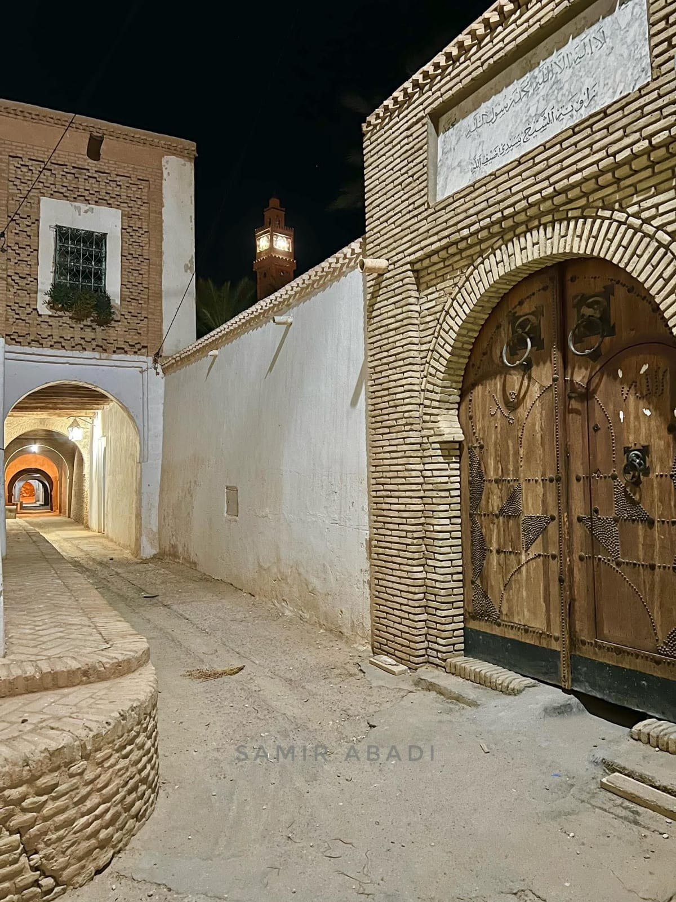
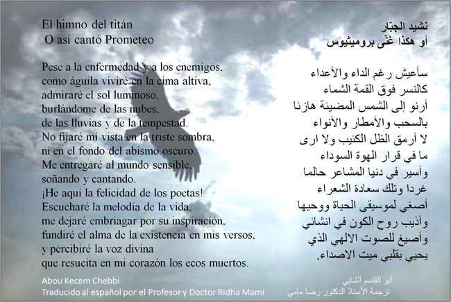

Djéridna
Bienvenue au pays du soleil couchant, là où le désert s’incline devant l’oasis.
Le Manifeste du Djérid : Terre d'Ombre et de Lumière
vous n’êtes plus un visiteur... vous êtes l’invité de Djéridna.
Nous avons créé cet espace pour préserver et partager ce patrimoine unique. Que vous soyez ici
pour
explorer nos canyons de montagne, découvrir nos savoir-faire artisanaux ou simplement goûter à la
quiétude de nos médinas.
-
le Djérid en chiffres:
- 4 Millions de palmiers dattiers.
- 13ème Siècle : Date du système d'irrigation d'Ibn Chabbat.
-
Dans le silence et les mystères de la médina
-
Hommage au grand poète Abou Lkacem Chebbi
le goût miel de la Deglet Nour
Entrer dans le Djérid, c’est franchir une frontière invisible entre le tumulte du monde et
la
sérénité
des jardins suspendus. Ici, aux portes du Sahara, l’ingéniosité humaine a sculpté un miracle
de
terre et
d’eau qui défie le temps depuis des siècles.




Voyagez à travers l'ocre de nos briques de Nefta, façonnées à la main et disposées en
dentelles
géométriques pour capturer l'ombre.
La brique du Djérid, utilisée aussi bien à Tozeur qu'à Nefta, est l'un des trésors
architecturaux de
la Tunisie. Elle est au cœur de l'identité de cette région oasienne, marquant profondément
les
paysages urbains des anciennes médinas.




Le Djérid n'est pas seulement une destination ; c'est une âme. C’est le souffle du poète
Abou el
Kacem Chebbi qui vibre encore dans l'air,

